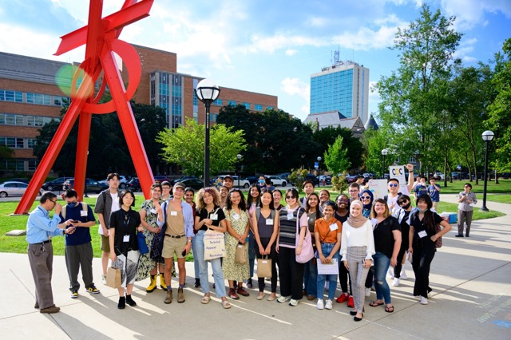
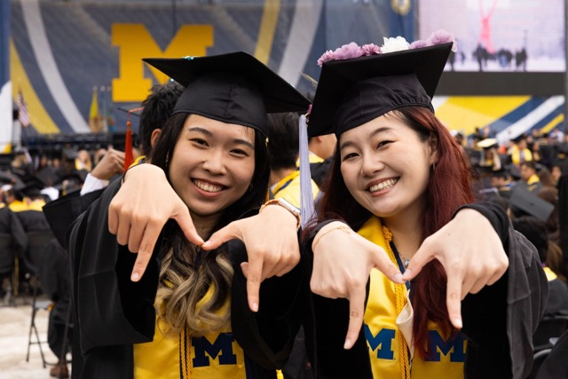
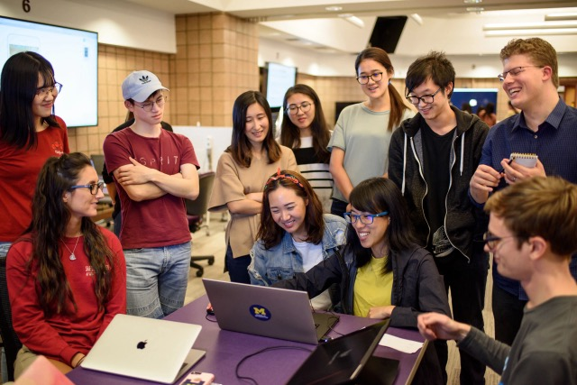

Who We Are
CEW+ empowers women+ and underserved individuals in the University of Michigan and surrounding communities by serving as an advocate and providing resources to help individuals reach their academic, financial, and professional potential. CEW+ provides immediate and ongoing services and the financial support needed to ensure educational success and degree completion. Women+ and underserved students are CEW+’s primary constituency, but all students are welcome. CEW+ also serves those who encounter education and career obstacles based on their non-linear paths to, and experiences within, the University community.
Our Core Services
At CEW+, we offer a range of services to help you meet your academic and professional goals:
- Events & Workshops - Click for upcoming events
- Funding - Click to browse funding opportunities
- Counseling - Click for career & education counseling
- Advocacy Initiatives - Click to browse our initiatives
CEW+ Stories
The CEW+ Stories Project and the CEW+ podcast, Strength in the Midst of Change, is dedicated to sharing stories and celebrating our relationships with faculty, staff, and students at the University of Michigan and the rest of the CEW+ family. These stories represent the different ways in which CEW+ works in the University and the general community. We hope you enjoy meeting some of the people whose lives have been touched by CEW+.